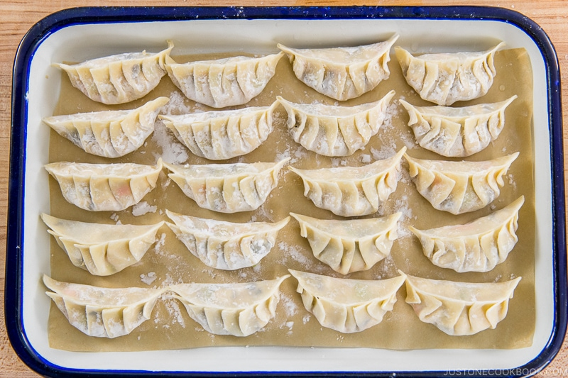
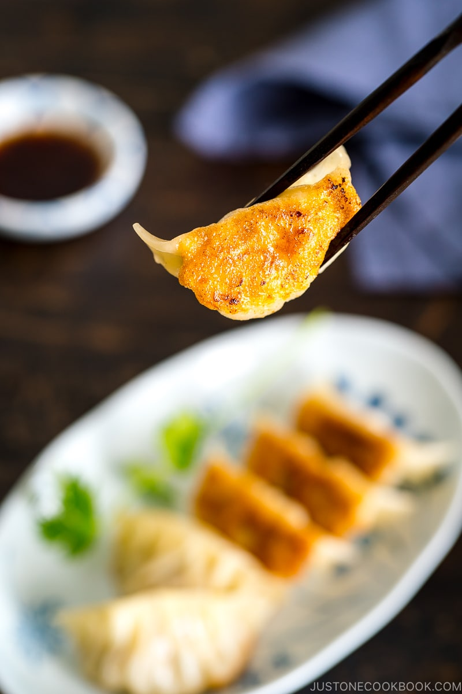

Gyoza

Image Credit: Just One Cookbook
Description
These Japanese dumplings get their distinctive softness and crunch from a combination of
frying and steaming. Gyoza come filled with a variety of meats and vegetables, but we'll be
using a traditional mix of ground pork, cabbage, and shiitake mushrooms.
This recipe comes from Just One Cookbook.
Ingredients
Frying
- 1 package gyoza wrappers
- 1 tablespoon vegetable oil
- 1/4 cup water
- 1 teaspoon roasted sesame oil
Filling
- 3/4 pounds ground pork
- 5 oz green cabbage
- 2 green onions
- 2 shiitake mushrooms
- 1 clove garlic, minced
- 1 knob ginger, grated
Seasonings
- 1 teaspoon sake
- 1 teaspoon roasted sesame oil
- 1 teaspoon soy sauce
- 1/4 teaspoon kosher salt
- 1/8 teaspoon ground black pepper
Dipping Sauce
- 1 tablespoon rice vinegar
- 1 tablespoon soy sauce
- 1/8 teaspoon la-yu (Japanese chili oil)

Image Credit: Just One Cookbook
Steps
Making the Filling
- After you open the gyoza wrappers, make sure to cover them under a damp towel or plastic wrap so they don't dry out.
- As cabbage leaves are thick and hard, we use different ways to wilt them. You can blanch or microwave the leaves for a minute or two. You can also sprinkle them with salt to dehydrate the cabbage, then squeeze the water out. Or you can skip the entire process altogether.
- Discard the thick core of the cabbage leaves; mince the leaves into very small pieces.
- Mince the green onions and shiitake mushrooms into small pieces.
- Combine the ground meat, cabbage, green onions, and shiitake mushrooms in a large bowl.
- Add the minced garlic and grated ginger to the bowl.
- Add the seasonings to the bowl.
- Mix well and knead the mixture with your hand until it becomes pale in color and sticky.
Folding the Gyoza
- Fold the wrapper in half over the filling and pinch it in the center with your fingers, but don’t seal it yet.
- Using the thumb and index finger of your right hand, start making a pleat about once every ¼ inch (6 mm) on the top part of the wrapper from the center toward the right side, making 3-4 pleats. Tip: As you fold each pleat, press the folded pleat tightly against the back part of the wrapper using your left thumb and index finger.
- Continue with the left side of the gyoza, making 3-4 pleats with your left hand, starting in the center and moving toward the left side.
- Press the pleats and shape the gyoza. Repeat folding the remaining wrappers.
Cooking
- Heat the oil in a large non-stick frying pan over medium heat. When the pan is hot, place the gyoza in a single layer, flat side down in a circular pattern (or place them in two columns).
- Cook until the bottom of the gyoza turns golden brown, about 3 minutes.
- Add ¼ cup of water to the pan. Immediately cover with a lid and steam the gyoza for about 3 minutes or until most of the water evaporates.
- Remove the lid to evaporate any remaining water. Drizzle 1 tsp sesame oil around the gyoza in the frying pan.
- Cook uncovered until the gyoza is golden brown and crisp on the bottom.
- Transfer to a plate and serve with the dipping sauce. For the dipping sauce, combine the sauce ingredients in a small plate and mix together.
- Storage: You can keep the leftovers in an airtight container and store in the refrigerator for up to 3 days or in the freezer for a month.

Image Credit: Just One Cookbook